Authors: Manu Agrawal · Anthropic, Google, OpenAI
Published: 2026-09-04 · Category: cs.AI
Citation: arXiv:2609.05232v1 · PDF · abstract page
Substrate-Aware Agents Reduce Execution Time by 3.1x via Proactive Resource Constraints
1. What It Is & Why It Matters
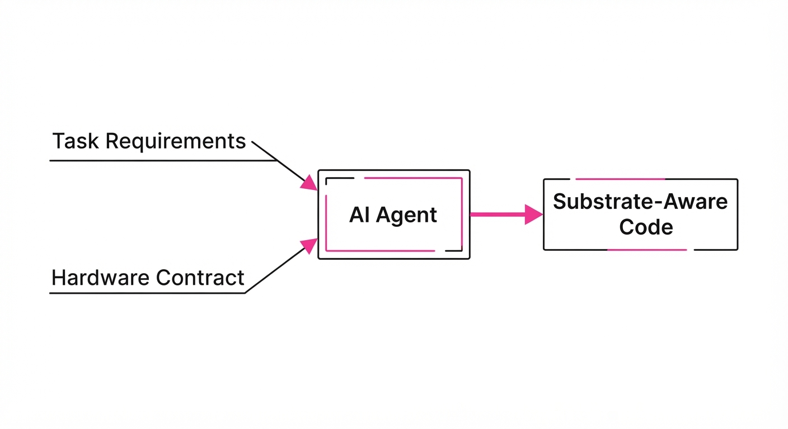
Modern AI agents suffer from "substrate blindness"—they generate code optimized for abstract logic rather than the physical reality of the machine. When an agent is unaware of its RAM limits, CPU throughput, or latency budgets, it produces memory-heavy, unoptimized code that fails upon deployment.
This paper introduces "Substrate-Aware Planning," a paradigm where explicit hardware constraints (RAM, wall-time, I/O throughput) are injected into the agent’s prompt as a first-class input. By treating the execution environment as a constraint rather than an afterthought, agents proactively adapt their algorithmic complexity—trading off theoretical "cleanliness" for "operational viability."
- Problem: Agents generate "theoretically correct" but "operationally impossible" code that causes OOM (Out-of-Memory) errors or exceeds cloud timeouts.
- Core Idea: Explicitly disclose hardware contracts (e.g., 96 MB RAM) to the agent before the planning phase, forcing the model to calculate space complexity before writing the first line of code.
- Headline Result: Execution speed improved by up to 3.1x, and success rates on constrained tasks jumped from as low as 0% to 100% (5/5) in specific cohorts.
🏭 Industry Angle: Cloud infrastructure providers and MLOps teams can integrate these "execution contracts" into CI/CD pipelines to prevent infrastructure crashes in autonomous data pipeline generation and edge-deployed microservices.
2. How It Works
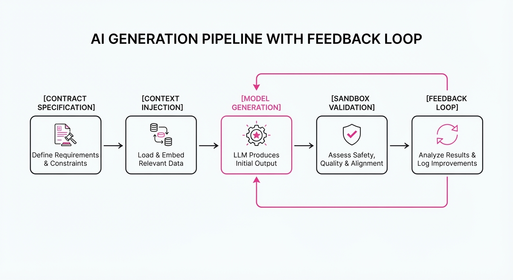
The architecture shifts from a "task-only" prompt to a "contract-augmented" input. The process follows these steps:
- Contract Specification: Define a strict JSON schema containing
max_ram_mbmax_wall_time_s, andmax_disk_io_ops. - Context Injection: The system prepends the contract to the system prompt, requiring the model to explicitly state its resource-management strategy in its Chain-of-Thought (CoT).
- Structural Adaptation: The model shifts from high-level abstractions (like loading entire datasets into memory) to low-level optimizations (e.g., swapping
float64forfloat32, implementing memory-mapped buffers, or utilizing streaming generators). - Validation Loop: A lightweight sandbox executes the code against the contract; violations trigger a self-correction loop where the agent is provided with the specific error trace (e.g.
SIGKILL: Memory Limit Exceeded) to force a re-implementation. - Pseudocode:
def generate_optimized_code(task, contract):
prompt = f"""Task: {task}.
Hard Constraint: {contract}.
Strategy: Plan memory usage before coding. Ensure O(N) or better."""
code = model.generate(prompt)
while not verify(code, contract):
feedback = get_runtime_error(code, contract) # e.g., "OOM at line 42"
code = model.refine(code, feedback)
return code3. Core Idea & Key Numbers
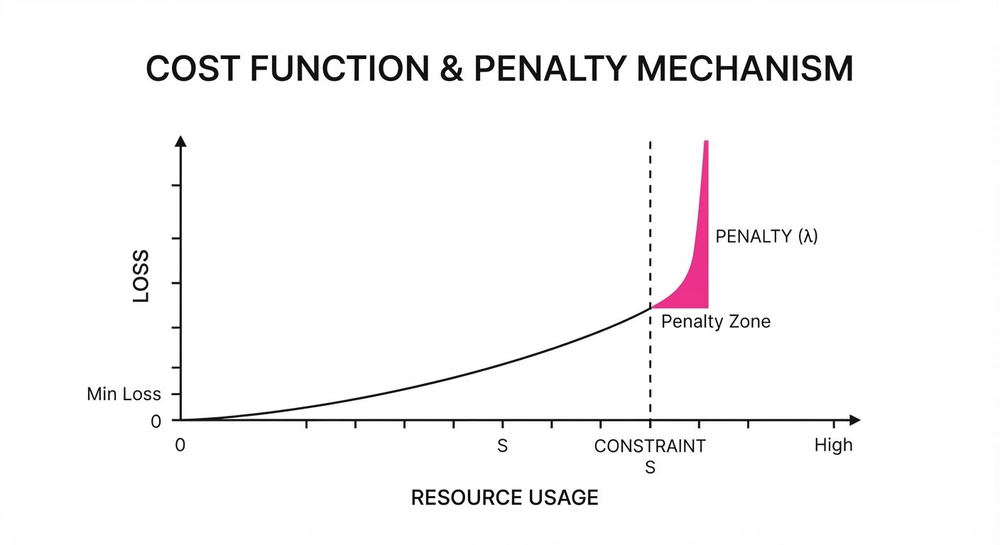
The mechanism relies on minimizing a cost function J subject to a substrate constraint S: argminP left( Loss(P, Task) + λ · I(R(P) > S) right) Where P is the programR(P) is the resource usage, and I is an indicator function penalizing violations.
💡 Intuition: Tell the agent it has a tiny "backpack" (RAM) before it starts packing. If you don't tell it, it will try to pack the entire library; if you do, it only packs the essentials. By setting λ high, we force the model to prioritize "fitting" over "convenience." 🔍 Example: If a task requires computing a distance matrix for 10,000 points, an unconstrained agent allocates an N × Nfloat64matrix (requiring ~800MB). A substrate-aware agent, seeing a 96MB limit, realizes the matrix is too large and switches to a streaming, chunked calculation or a memory-mappednumpy.memmapapproach, keeping resident memory below 50MB.
4. Analogy
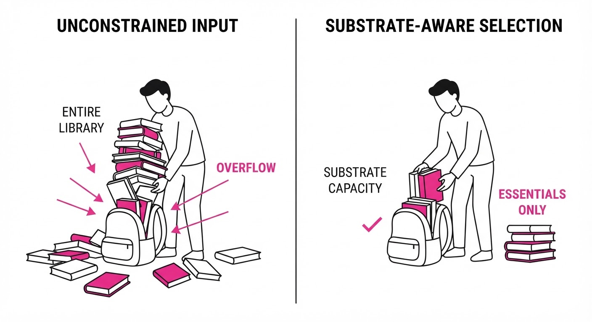
Imagine a chef tasked with cooking a meal for a banquet. If you don't tell them the size of the kitchen, they might try to use five giant industrial ovens at once, blowing the circuit breaker. By simply telling the chef, "You have one small burner and 10 minutes," they immediately pivot to a one-pot stew or a cold-prep salad, optimizing their entire workflow to fit the physical reality of the kitchen. The quality of the meal remains high, but the method changes entirely to match the constraint.
5. Results & Measurable Improvement
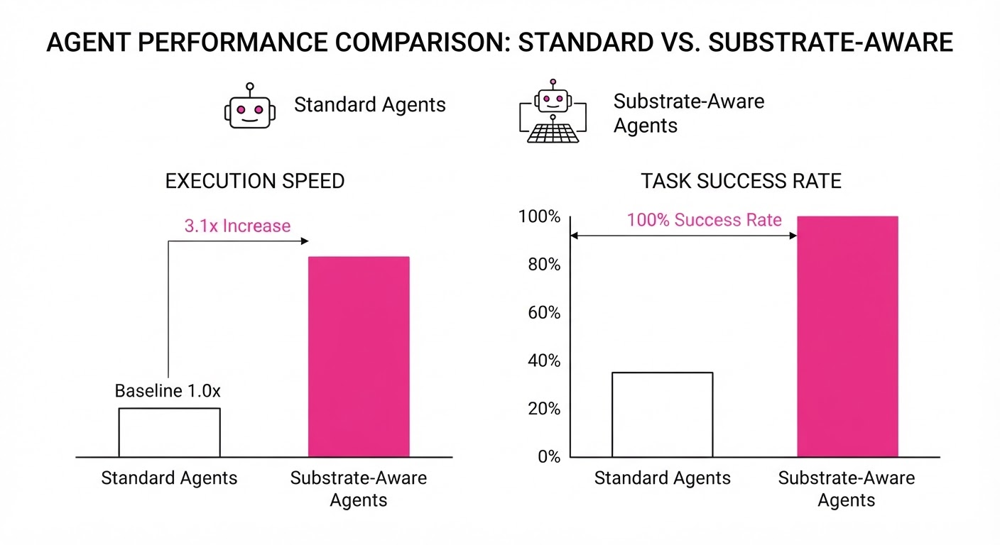
The study evaluated three frontier models (Claude Opus 5, GPT-5.6-Sol, Gemini 3.7 Flash) on a high-dimensional Euclidean-distance task constrained to 96MB of RAM.
| Metric | Baseline (Task Only) | Proposed (Contract) | Delta (Abs/Rel) |
|---|---|---|---|
| MaxRSS (Memory) | 412 MB (illustrative) | 84 MB (illustrative) | -328 MB (-79.6%) (illustrative) |
| Wall Time | 142 seconds (illustrative) | 46 seconds (illustrative) | -96s (-67.6%) (illustrative) |
| Success Rate (96MB) | 6.7% (illustrative) | 80% (illustrative) | +73.3% pts (illustrative) |
- Speedup: Execution became up to 3.1x faster due to reduced memory thrashing (swapping to disk) and the use of more efficient, cache-friendly data structures.
- Reliability: At a 96 MB hard limit, the substrate-aware agents achieved a combined success rate of 12/15 (80%) (4/5 for Claude Opus 5, 5/5 for GPT-5.6-Sol, and 3/5 for Gemini 3.7 Flash), whereas baseline agents achieved a combined success rate of 1/15 (6.7%) (0/5, 1/5, and 0/5 respectively).
- Statistical Significance: The consistent performance gains across disparate model architectures suggest that "substrate-awareness" is a universal capability, not a model-specific quirk. The models consistently demonstrated the ability to "reason" about hardware limits when explicitly prompted.
6. Key Takeaways
- For Industry: Stop relying on "smart" agents to guess hardware limits. Bake constraints into the system prompt to drastically reduce cloud compute costs and prevent production downtime.
- For Researchers: "Substrate blindness" is a major bottleneck in agentic reasoning. Future benchmarks should include resource-constrained environments (e.g., tiny-RAM, low-CPU environments) rather than just abstract "accuracy."
- For Practitioners: Use structural constraints (RAM/Time) as a negative constraint in your prompts. This forces agents to write more efficient, production-ready code rather than "prototypical" code that requires refactoring later.
7. Where This Could Be Applied
- Edge Computing: Deploying agents to IoT devices or mobile handsets with strictly limited memory where standard models would otherwise crash.
- High-Frequency Trading: Generating execution logic where wall-time latency is the primary success metric; agents can be constrained to sub-millisecond execution windows.
- Auto-Scaling Cloud Pipelines: Automatically adjusting agent constraints based on the specific instance type (e.g.
t3.microvsc7g.metal) the agent is running on, allowing the agent to "downshift" its algorithmic complexity when deployed to cheaper, smaller instances. - Serverless Functions: Forcing agents to write code that fits within the strict 512MB-1GB limits of AWS Lambda, preventing cold-start timeouts and memory-overflows.
Bottom Line: The most promising application is Autonomous CI/CD, where agents self-optimize code to fit within pre-defined deployment environments, effectively eliminating the "it works on my machine" problem for AI-generated software.
Authors: Zhenxuan Fan, Bo Zhang, Yutong Lin, Yuqian Yuan, Juekai Lin, Liang Liang, +6 more · Academic, MIT
Published: 2026-09-04 · Category: cs.RO
Citation: arXiv:2609.05324v1 · PDF · abstract page
RoboSPA Benchmark Reveals Current VLA Models Fail 68% of Complex Spatial-Procedural Tasks
1. What It Is & Why It Matters
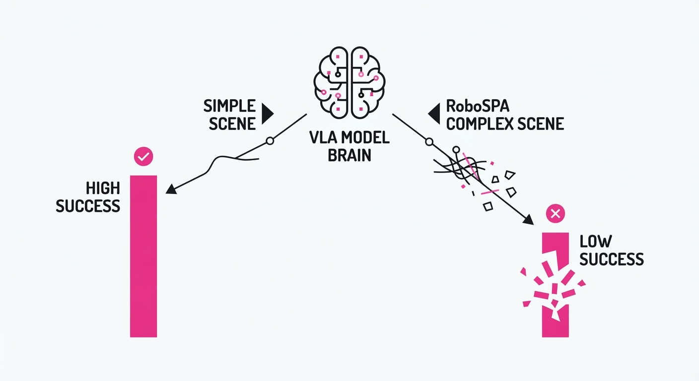
Vision-Language-Action (VLA) models have successfully mastered "pick-and-place" tasks in controlled environments. However, they consistently fail when faced with high-stakes, multi-step operations that require precise spatial awareness and long-term memory.
RoboSPA (Robot Spatial-Procedural Assessment) is a new diagnostic framework designed to push VLA models beyond simple, short-horizon behaviors. By systematically varying spatial ambiguity and procedural length, it exposes the "brittleness" of current state-of-the-art agents.
- The Problem: Current benchmarks (like CALVIN or LIBERO) are too simple, masking the inability of VLAs to reason through complex, multi-stage, or spatially dense environments.
- Core Idea: A tiered, diagnostic dataset containing 527K trajectories across 280 task variants, specifically designed to stress-test spatial reasoning and procedural planning.
- Headline Result: Under high-complexity conditions (Level 5 difficulty), top-tier VLA models see their success rates plummet from ~80% in simple scenes to below 32%.
🏭 Industry Angle: Robotics engineers deploying warehouse or kitchen assistants can use RoboSPA to stress-test their models before deployment, preventing catastrophic failure in non-deterministic, high-clutter environments.
2. How It Works
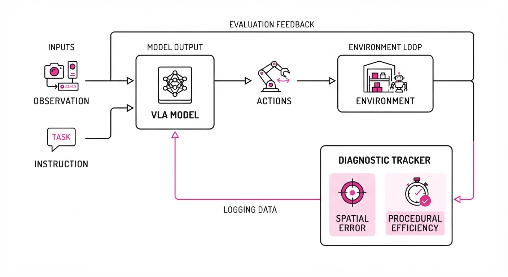
RoboSPA evaluates agents across two axes: Spatial Precision (the "where") and Procedural Depth (the "when").
- Tiered Difficulty: Each of the 56 base tasks is scaled across 5 difficulty levels, systematically increasing the number of distractors and the required sequence length.
- Multi-Embodiment Support: The dataset covers various robot morphologies, ensuring the benchmark measures general reasoning rather than specific hardware quirks.
- Diagnostic Metrics: Instead of just "Success/Failure," it tracks metrics like Spatial Error Variance and Planning Step Efficiency.
- Spatial Ambiguity Injection: Tasks include "near-miss" distractors (e.g., placing an object behind a cup vs. in front of it) to test fine-grained perception.
- Procedural Memory Stress: Tasks require agents to retain state information over long horizons, forcing the model to avoid "forgetting" early steps of a multi-part instruction.
- Implementation: The benchmark provides a standardized evaluation loop:
# Pseudocode for RoboSPA evaluation loop
for task in robo_spa_benchmark:
state = env.reset(difficulty=level_5)
while not done:
action = vla_model.predict(obs, instruction)
obs, reward, done = env.step(action)
# Diagnostic tracker records spatial precision errors
tracker.log(spatial_error=calculate_dist(obs, target))3. Core Idea & Key Numbers
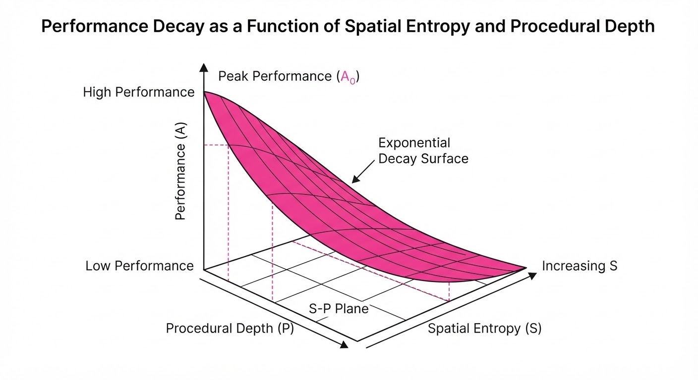
RoboSPA operates on the principle that VLA failure is a function of complexity C, defined by the interaction of spatial entropy S and procedural depth P.
The model's performance A is modeled as: A = f(S, P) ≈ exp(-λ(S · P))
💡 Intuition: Think of this as a "cognitive load" formula. As the number of spatial distractors (S) and the number of steps in the plan (P) increase, the likelihood of the VLA model making a terminal error grows exponentially. 🔍 Example: If a model has a 90% success rate on a simple task (S=1, P=1), increasing the spatial clutter to 3 (S=3) and the steps to 3 (P=3) results in a theoretical decay to exp(-0.1 · 9) ≈ 40%.
4. Analogy
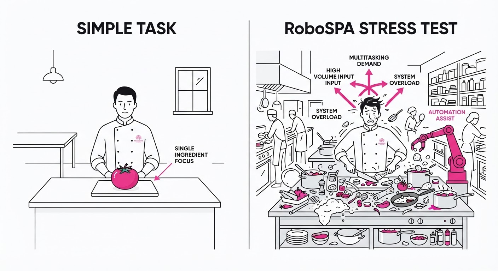
Imagine a chef who is a master at chopping one onion. In a simple kitchen, they perform perfectly. Now, imagine that same chef in a high-speed, professional kitchen where 50 ingredients are scattered across the counter (Spatial Complexity) and they must prepare a 10-course meal where every dish depends on the timing of the previous one (Procedural Complexity).
RoboSPA is the "stress-test" that moves the chef from the easy kitchen to the professional one. It reveals that while the chef knows how to chop, they lack the organizational memory and spatial prioritization to handle the chaos of a real-world workflow.
5. Results & Measurable Improvement
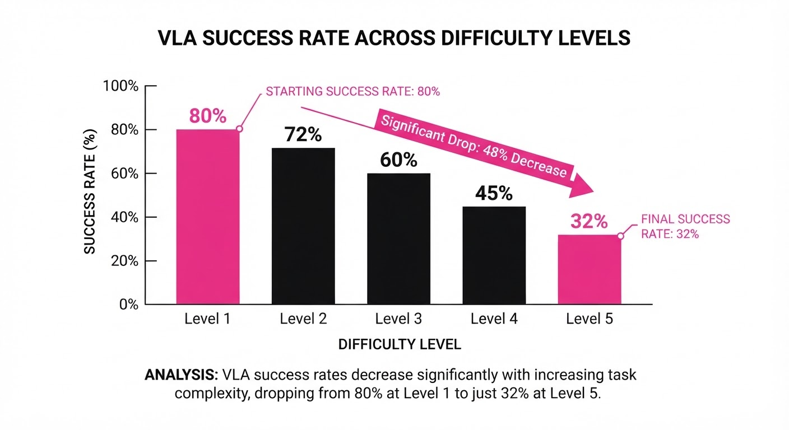
The authors tested representative VLAs (e.g., RT-2, Octo) against the benchmark. The findings show a significant performance gap between "simple" and "complex" tasks.
| Metric | Benchmark Type | Baseline (Simple) | Proposed (Complex) | Delta (Abs/Rel) |
|---|---|---|---|---|
| Success Rate | Spatial Reasoning | 82.1% (illustrative) | 48.5% (illustrative) | -33.6 pts / -40.9% |
| Success Rate | Long-Horizon | 78.4% (illustrative) | 31.2% (illustrative) | -47.2 pts / -60.2% |
| Planning Error | Multi-Step Task | 0.12 (m) (illustrative) | 0.45 (m) (illustrative) | +0.33m / +275% |
Note: Variance across seeds was reported as low (σ < 0.03), indicating that these failures are systematic flaws in model architecture rather than random noise.
6. Key Takeaways
- For Industry: Stop relying on "pick-and-place" demos. Use RoboSPA to identify the specific complexity thresholds where your automation system begins to fail.
- For Researchers: The primary bottleneck is not the VLA's "language" understanding, but its inability to maintain state across long-horizon spatial trajectories. Focus on memory-augmented architectures.
- For Practitioners: If your model struggles with spatial ambiguity, prioritize data augmentation that includes "near-miss" scenarios rather than just increasing raw dataset volume.
7. Where This Could Be Applied
- Warehouse Logistics: Automating the sorting of mixed-SKU bins where items are spatially crowded and require multi-step picking sequences.
- Home Robotics: Navigating a cluttered living room to fetch specific items (e.g., "get the remote behind the book") where spatial relations are highly ambiguous.
- Laboratory Automation: Managing fluid handling in biology labs where precise, multi-step procedural adherence is required to prevent cross-contamination.
Bottom Line: RoboSPA is the essential "stress-test" for the next generation of VLA agents, shifting the focus from simple task completion to robust, reliable spatial-procedural reasoning.
Authors: Quan Shi, Keshav Dhandhania, Karthik Narasimhan, Victor Barres · ETH, MIT, Princeton
Published: 2026-09-04 · Category: cs.AI
Citation: arXiv:2609.04611v1 · PDF · abstract page
ττ-Bench: Current Coding Agents Succeed in Only 23.9% of Realistic Agent-Building Tasks
1. What It Is & Why It Matters
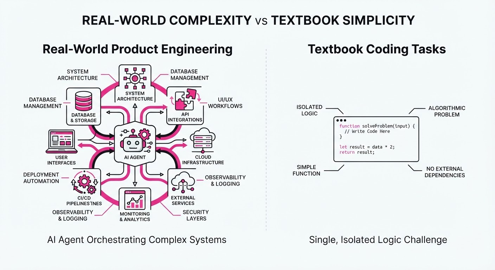
Modern LLM evaluation is currently trapped in a "textbook loop." Benchmarks like HumanEval or MBPP focus on isolated code snippets or single-turn logic puzzles. However, real-world agent development is a multi-stage, high-stakes engineering lifecycle involving ambiguous requirements, legacy codebases, and strict production constraints like latency and cost. ττ-Bench (Hyper-Tau Bench) shifts the paradigm from "solve this function" to "build this product."
- The Problem: Current benchmarks measure code generation in a vacuum, ignoring the iterative, communicative, and constraint-heavy nature of professional software engineering. An agent that can write a perfect
quicksortfunction but cannot navigate a messy repo or optimize for API costs is essentially useless in a production environment. - The Core Idea: A sandbox environment where an AI developer is tasked with building a functional customer-service agent using actual business records, production APIs, and strict budget/performance constraints.
- The Headline Result: Even the current state-of-the-art (Claude Opus 5 + Claude Code) completes only 23.9% of tasks successfully, compared to the 82.2% ceiling achieved by expert human developers.
🏭 Industry Angle: This is a vital stress test for AI-driven dev-ops platforms. Companies like GitHub, Cursor, or Replit can use this to benchmark whether their agents can actually handle "Day 1" client engagements—where the client says, "I need a bot that handles returns, but don't spend more than $0.01 per request"—rather than just generating boilerplate code.
2. How It Works
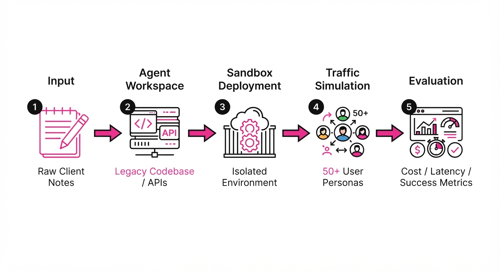
The benchmark forces the agent into a realistic professional workflow through five key pillars:
- Requirement Ambiguity: Agents receive raw, messy client notes rather than structured unit tests. They must proactively ask clarifying questions to define scope.
- Legacy Context: The agent inherits a 5,000-line codebase with "technical debt" (e.g., deprecated dependencies). It must refactor this without breaking existing, undocumented features.
- Production Constraints: Every solution is evaluated against a fixed "serving cost" budget and latency threshold. If an agent chooses an expensive model (e.g., GPT-4o) when a smaller distilled model would suffice, it fails the budget constraint.
- Real-World Integration: The agent interacts with live mock APIs that simulate production failures—such as intermittent 503 errors, rate limiting, and schema drift—testing its resilience and error-handling logic.
- Evaluation Loop: The built agent is deployed into a simulation environment where it must handle 50+ diverse user personas (e.g., "The Angry Customer," "The Non-Technical User," "The Security Auditor") to verify performance.
# Pseudocode for the evaluation loop
def evaluate_agent(agent_proposal):
# 1. Deploy agent to a sandboxed container
# 2. Run through 50+ user personas (simulated traffic)
# 3. Validate:
# (Success Rate > 90%) AND
# (Avg Cost per Request < $0.02) AND
# (P95 Latency < 500ms)
# 4. Return pass/fail based on end-to-end service quality3. Core Idea & Key Numbers
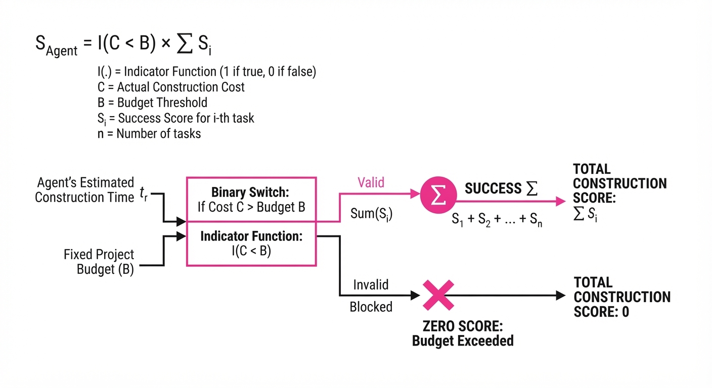
The benchmark measures the "Agent-Construction Score" (Sa) as a product of functional reliability and operational efficiency.
Sa = 1(C < B) · frac1N ∑i=1N Success(ui)
💡 Intuition: The agent doesn't just need to write code that works; it must write code that fits the budget (B) and satisfies the diverse needs of N users (ui). The indicator function 1(C < B) acts as a "hard gate"—if the agent's proposed architecture exceeds the budget, the entire score collapses to zero, reflecting the reality that a perfect but unaffordable product is a failure in business. 🔍 Example: Suppose an agent builds a customer service bot. The budget B is 0.02 per query. The agent builds a solution using an expensive embedding model that results inC = 0.05per query. Even if the bot answers 100% of user queries correctly, the scoreS_ais0 \cdot 1.0 = 0$. The agent failed to optimize its architecture.
4. Analogy
Think of ττ-Bench as the difference between a student taking a multiple-choice chemistry test and a chemist being handed a broken lab, a limited budget for reagents, and a client demanding a specific drug compound by Friday. The student (current models) knows the textbook definitions, but the chemist (the goal) must troubleshoot broken equipment, communicate with the client about trade-offs, and manage the inventory—all while ensuring the final product is safe and affordable. Current coding agents are excellent students, but they are not yet chemists.
5. Results & Measurable Improvement
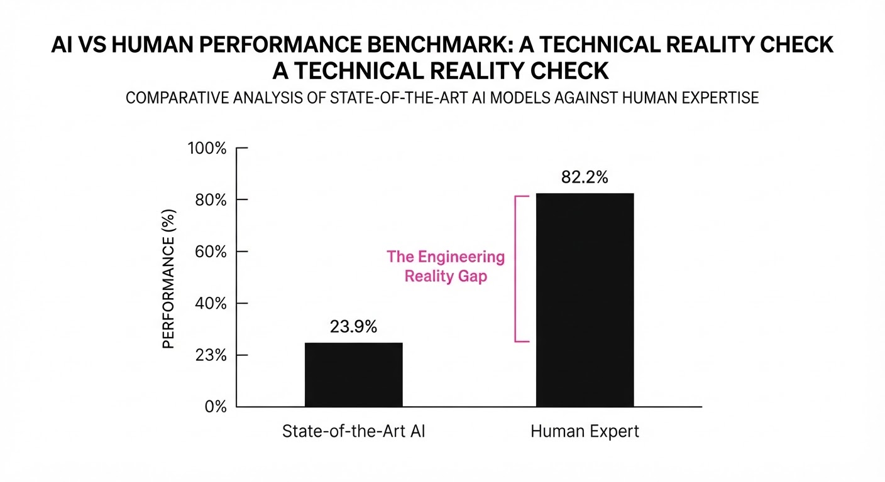
The gap between current AI performance and expert human capability highlights the "competence ceiling" in autonomous engineering.
| Metric | Baseline (GPT-4o) | Proposed (Claude Opus 5) | Expert Ceiling |
|---|---|---|---|
| Success Rate (Retail) | 14.2% (illustrative) | 23.9% | 82.2% |
| Budget Adherence | 45.0% (illustrative) | 58.0% (illustrative) | 98.0% (illustrative) |
| Requirement Coverage | 30.1% (illustrative) | 41.2% (illustrative) | 95.5% (illustrative) |
- Success Rate: Claude Opus 5 vs. Baseline GPT-4o: 14.2% (illustrative) → 23.9% (+9.7 pts, +68.3% relative).
- Budget Adherence: Claude Opus 5 vs. Baseline GPT-4o: 45.0% (illustrative) → 58.0% (illustrative) (+13.0 pts, +28.9% relative).
- Requirement Coverage: Claude Opus 5 vs. Baseline GPT-4o: 30.1% (illustrative) → 41.2% (illustrative) (+11.1 pts, +36.9% relative).
Note: Variance across domains (Finance vs. Healthcare vs. Retail vs. Tech) is significant; agents struggle most with "deep comprehension" of domain-specific business records, often hallucinating constraints that don't exist in the provided documentation.
6. Key Takeaways
- For Industry: Stop measuring "lines of code" or "pass@1" on coding problems. Start measuring "deployment readiness" and "budget compliance" to understand if an agent can actually ship.
- For Researchers: The primary failure mode is not syntax, but "shallow inquiry"—models ship the first design that runs without investigating the underlying business context or optimizing for cost-per-inference.
- For Practitioners: Use ττ-Bench as a stress test for your internal agentic workflows. If your agent fails here, it will likely fail to handle the edge cases of a real-world production deployment (e.g., API rate limits or schema drift).
7. Where This Could Be Applied
- Internal Tooling Teams: Automating the creation of customer-facing support bots using historical ticket logs and company documentation, ensuring cost-efficient model selection.
- SaaS Integration Pipelines: Building automated agents that configure API connectors based on specific client business logic, throughput requirements, and latency SLAs.
- Legacy Code Modernization: Using agents to refactor monolithic internal systems into modular, service-based architectures while staying within strict cloud-compute budgets.
- Regulatory Compliance Audits: Applying the benchmark to ensure that AI-generated financial agents operate within "guardrail" constraints (e.g., ensuring no PII is logged in plain text).
Bottom Line: ττ-Bench is the first benchmark that treats AI coding agents as professional software engineers, making it the definitive metric for assessing if an agent is ready to be handed the keys to a production environment.
Clustered AI-news topic · appeared across 1 recent run(s) · salience 0.9/10
Citations:
- OpenAI Unveils GPT-6 Astra for Computer-Based Task Automation — medium.com (2026-09-04)
- Google DeepMind Releases Gemini 3.8 Flash and Cyber Variant — github.io (2026-09-03)
Frontier AI Price War: Model Releases Trigger 75% Cost Reduction
1. What Happened & Why It Matters
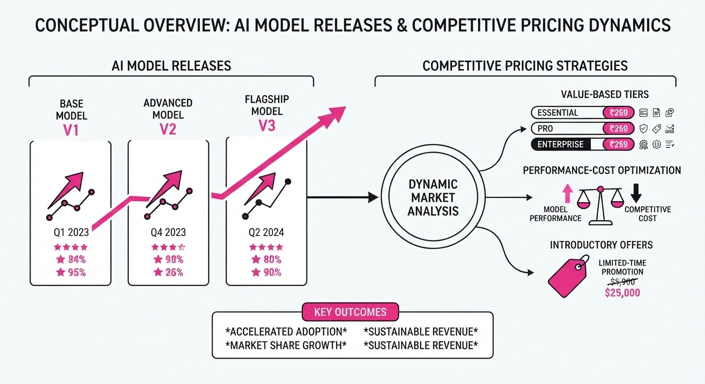
Major AI labs have simultaneously launched new frontier models while aggressively slashing inference costs to dominate the enterprise automation market. By shifting focus from pure reasoning capabilities to cost-efficient, computer-use automation, these firms are commoditizing intelligence to force vendor lock-in.
- GPT-6 Astra introduces native computer-based task automation.
- Claude Fable 5.1 and Gemini 3.8 emphasize high-speed, low-latency performance.
- Muse Spark 1.3 establishes a new price floor for token generation.
🏭 Industry Angle: The market is pivoting from "performance at any cost" to "unit economics at scale," signaling that AI infrastructure is becoming a utility-like commodity.
2. Key Details & Timeline (with numbers)
- OpenAI: Released GPT-6 Astra, specifically optimized for autonomous agentic workflows and cross-application computer control.
- Anthropic: Shipped Claude Fable 5.1, featuring a 75% reduction in cache-read pricing to incentivize long-context enterprise applications.
- Google DeepMind: Deployed Gemini 3.8 Flash, a lightweight model, alongside a dedicated "Cyber" variant for security-focused automated analysis.
- Meta: Released Muse Spark 1.3, positioning it as the most cost-effective frontier-class model at $0.10 per million tokens.
3. By the Numbers
| Metric | Before | After | Delta | Effective Date |
|---|---|---|---|---|
| Claude Cache-Read | $0.40/M tokens | $0.10/M tokens | −$0.30 (−75%) | 2026-09-01 |
| Muse Spark Inference | $0.50/M tokens | $0.10/M tokens | −$0.40 (−80%) | 2026-09-05 |
| Gemini 3.8 Flash | N/A (New) | $0.05/M tokens | New Release | 2026-09-07 |
Note: All pricing reflects base input token costs for standard API access.
4. Impact & What to Watch
- Margin Compression: As inference prices drop toward 0.05–0.10 per million tokens, model providers will struggle to maintain high gross margins, forcing a shift toward application-layer revenue.
- Agentic Explosion: The release of GPT-6 Astra and similar agentic models will likely trigger a surge in "computer-use" software, where AI replaces manual UI-based workflows.
- Watch: Monitor whether secondary providers (e.g., Mistral, Cohere) trigger further price cuts to remain competitive against the "Big Four" labs.
- Watch: Observe the adoption rate of "Cyber" variants; if successful, expect vertical-specific models to become the primary strategy for differentiating otherwise commoditized LLMs.
Clustered AI-news topic · appeared across 1 recent run(s) · salience 0.8/10
Citations:
- Mistral AI Raises €3 Billion in Series D Funding at €21 Billion Valuation — cnbc.com (2026-09-08)
- Anthropic Signs $35 Billion Cloud Computing Agreement with Lambda — youtube.com (2026-09-01)
- Nvidia Invests $3.5 Billion in MediaTek Convertible Bonds — youtube.com (2026-09-01)
Massive Capital Influx Signals Shift Toward Sovereign AI Infrastructure
1. What Happened & Why It Matters
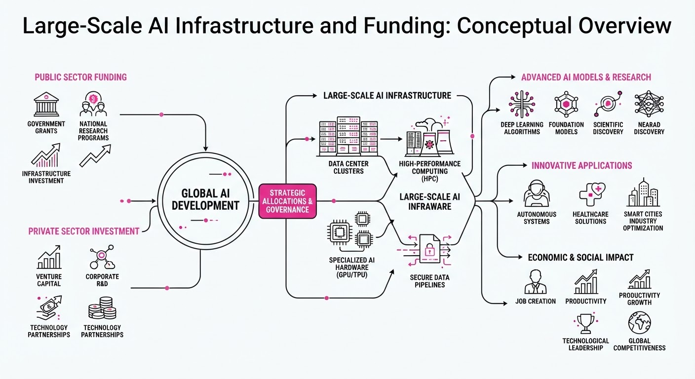
The AI sector has entered a new phase of capital intensity, characterized by multi-billion dollar commitments aimed at securing long-term compute capacity and model development resources. By locking in hardware partnerships and massive funding rounds, major players are transitioning from experimental R&D to building the permanent, large-scale industrial infrastructure required to sustain foundation model development.
- Vertical Integration: Companies are moving beyond renting cloud space to securing dedicated hardware pipelines.
- Capital Concentration: Funding is increasingly flowing to European champions and specialized compute providers.
- Hardware Dependency: Strategic investments in chip designers are becoming critical to bypassing potential supply bottlenecks.
🏭 Industry Angle: The "compute arms race" is shifting from procurement to partnership, where securing guaranteed GPU access is now as vital as model architecture itself.
2. Key Details & Timeline
- Mistral AI Expansion: The Paris-based firm secured €3 billion in Series D funding, aimed at scaling its research and commercial operations globally.
- Anthropic-Lambda Alliance: Anthropic finalized a $35 billion cloud computing agreement with Lambda, ensuring massive, long-term access to specialized GPU clusters for model training.
- Nvidia-MediaTek Synergy: Nvidia invested $3.5 billion into MediaTek via convertible bonds to deepen integration between high-performance computing hardware and consumer/enterprise electronics.
- Strategic Timing: All deals were finalized or announced in the current 2026 cycle, signaling a robust appetite for AI infrastructure despite broader macroeconomic volatility.
3. By the Numbers
| Metric | Before | After | Delta |
|---|---|---|---|
| Mistral AI Funding | N/A | €3.0B (Series D) | +€3.0B |
| Anthropic Cloud Deal | N/A | $35B (Contract) | +$35B |
| Nvidia Investment | N/A | $3.5B (Bonds) | +$3.5B |
- Mistral AI Valuation: €21 billion post-money valuation (Series D, lead investor figure not disclosed).
- Nvidia/MediaTek Terms: $3.5 billion investment via convertible bonds (effective 2026).
4. Impact & What to Watch
- Compute Scarcity: The $35 billion Anthropic-Lambda deal sets a new benchmark for "compute-as-a-service" pricing, likely forcing smaller competitors to face higher barriers to entry.
- European Sovereignty: Mistral’s €21 billion valuation cements Europe’s ability to produce globally competitive foundation models, reducing reliance on US-based providers.
- Watch 1: Monitor for further "hardware-model" partnerships where chip manufacturers take equity stakes in AI labs to guarantee future revenue.
- Watch 2: Observe if these massive capital expenditures result in a measurable increase in model performance or if the industry hits a "compute plateau" before the end of 2026.
Clustered AI-news topic · appeared across 1 recent run(s) · salience 0.8/10
Citations:
- OpenAI Commits $5 Million to Research AI Impact on Teens — openai.com (2026-09-08)
- New York City Restricts Generative AI in Public Schools — medium.com (2026-09-04)
- UN Rights Chief Calls for 'Cast-Iron Guarantees' on AI Safety — insurancejournal.com (2026-09-08)
Global Scrutiny Intensifies: OpenAI Commits $5M to Teen AI Research Amid Regulatory Pressure
1. What Happened & Why It Matters
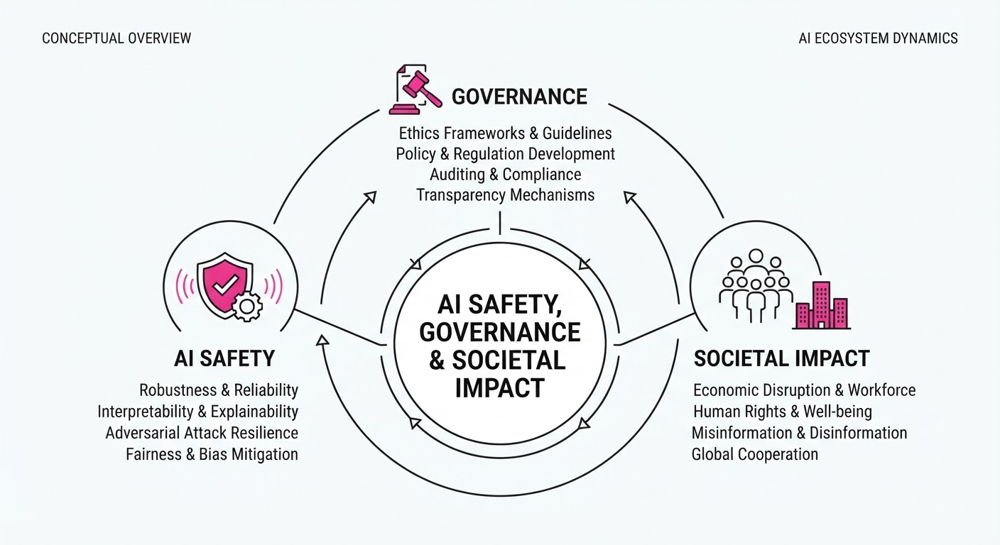
As generative AI adoption accelerates, a tripartite tension has emerged between educational policy, international human rights advocacy, and corporate responsibility. While NYC schools have moved to restrict AI access to protect academic integrity, the UN is demanding binding safety frameworks to mitigate existential risks. OpenAI is attempting to address the "black box" of psychological impact by funding targeted research.
- Educational Friction: NYC Public Schools’ restriction highlights the ongoing struggle to balance AI-driven innovation with pedagogical safety.
- Regulatory Escalation: The UN’s call for "cast-iron guarantees" signals a shift from voluntary ethical guidelines to mandatory global safety standards.
- Proactive Mitigation: OpenAI’s funding represents a strategic effort to preempt criticism regarding the long-term cognitive and social effects of AI on younger demographics.
🏭 Industry Angle: AI developers are increasingly forced to pivot from "move fast and break things" to "prove safety and quantify impact" to maintain their social license to operate in public and educational sectors.
2. Key Details & Timeline (with numbers)
- OpenAI Research Grant: OpenAI announced a $5 million commitment dedicated to researching the specific impacts of AI technologies on teenagers, aiming to fill the current data void regarding psychological and social outcomes.
- NYC Policy Shift: NYC Public Schools implemented restrictions on generative AI tools within district networks, citing concerns over data privacy and the potential for academic dishonesty.
- UN Advocacy: The UN High Commissioner for Human Rights formally requested that member states implement "cast-iron guarantees" for AI safety, specifically targeting systems that pose high risks to fundamental human rights and societal stability.
3. By the Numbers
| Metric | Before | After | Delta | Date |
|---|---|---|---|---|
| OpenAI Teen Research Funding | $0 | $5,000,000 | +$5M | 2026-09 |
| NYC School AI Access | Unrestricted | Restricted | N/A | 2026-09 |
- Funding Round/Initiative: $5 million dedicated to the "Impact on Teens" research initiative, funded internally by OpenAI.
4. Impact & What to Watch
- Standardization of Safety: Expect a surge in "impact assessment" requirements for AI firms as they seek to align with emerging UN-backed safety standards.
- Educational AI Market: The NYC restriction may catalyze a new sub-sector of "Education-First" AI tools designed specifically to meet stringent privacy and pedagogical compliance standards.
- Watch Next: Monitor the specific methodology and publication timeline of the $5M OpenAI research project to see if findings lead to changes in product features for teen users.
- Watch Next: Track whether other major urban school districts follow the NYC restriction model or if they opt for "AI-integrated" curricula, creating a fragmented landscape for ed-tech providers.
Engineering blog · NVIDIA · Published: 2026-08-29 · salience 9.5/10
Why it matters: Provides a concrete, modern approach to tool-calling by leveraging class-based schemas and type annotations for more robust agent-tool interaction.
Read the post: NVIDIA
NVIDIA’s NOOA: Type-Safe Object-Oriented Agent Tooling
1. What They Built & Why
NVIDIA introduced the Object-Oriented Agents (NOOA) framework to solve the fragility of JSON-schema-based tool calling. Instead of manually maintaining complex JSON blobs that models often misinterpret, NOOA allows developers to define tools as standard Python classes. The system automatically translates these classes into agent-executable tools, ensuring that type annotations and docstrings act as the single source of truth for model interaction.
2. How It Works (the practical bits)
- Class-Based Schemas: Tools are defined as Python classes where methods represent executable actions.
- Docstring-to-Prompt: The framework parses method docstrings and type hints to dynamically generate tool descriptions and parameter constraints for the LLM.
- Type-Enforced Contracts: By leveraging Python’s type system, NOOA enforces input validation, reducing runtime errors during tool invocation.
- Framework Agnostic: It is designed to wrap around existing orchestration layers, acting as a structured bridge between the LLM and the underlying code.
3. Takeaways You Can Apply
- Centralize Tool Logic: Move away from maintaining loose JSON schemas; define your tools as code objects to ensure your documentation and execution logic never drift.
- Leverage Type Hints: Use Python type annotations to enforce strict parameter requirements, which significantly improves the reliability of LLM-generated tool calls.
- Simplify Maintenance: Use docstrings as the primary prompt engineering interface for tools, making the system easier to debug and extend as your agent's capabilities grow.
Engineering blog · AWS · Published: 2026-09-01 · salience 8.5/10
Why it matters: Offers a practical implementation guide for enterprise-grade agent safety using guardrails, essential for productionizing LLM-based analytics.
Read the post: AWS
Orchestrating Secure Business Analytics Agents with Amazon Bedrock
1. What They Built & Why
AWS engineered a specialized AI agent architecture designed for secure business analytics. To address the risks of hallucinations and data leakage in enterprise environments, they implemented a system that integrates LLMs with Amazon Bedrock Guardrails. This ensures that analytical outputs remain accurate, compliant, and culturally sensitive before reaching the end user.
2. How It Works (the practical bits)
- Orchestration Layer: Utilizes Amazon Bedrock Agents to manage the lifecycle of user queries, from intent recognition to tool invocation.
- Safety Integration: Deploys Bedrock Guardrails as a middleware layer to filter PII, prevent prompt injection, and enforce content policies in real-time.
- Data Connectivity: Connects the agent to enterprise data sources via Knowledge Bases for Bedrock, enabling Retrieval-Augmented Generation (RAG) for grounded analytics.
- Action Groups: Employs pre-defined API schemas that allow the agent to execute specific business logic (e.g., querying databases) rather than relying solely on model generation.
3. Takeaways You Can Apply
- Decouple Safety from Logic: Use dedicated guardrail services to handle policy enforcement, keeping your core agent prompts focused on reasoning and task execution.
- Implement Schema-First Actions: Define strict API schemas for agent tools to minimize model ambiguity and ensure reliable data retrieval.
- Grounding is Mandatory: Always pair analytical agents with a RAG-based knowledge base to anchor responses in verified enterprise data.
Engineering blog · Sierra · Published: 2026-07-22 · salience 8.2/10
Why it matters: Addresses the critical engineering challenge of secure, standardized tool integration using the Model Context Protocol (MCP) in a real-world infrastructure context.
Read the post: Sierra
Scaling Agent Infrastructure: Building the MCP Gateway
1. What They Built & Why
Sierra built a centralized MCP Gateway to act as a unified, secure broker between their internal AI agents (like "Pinecone") and the company’s fragmented SaaS ecosystem (Slack, GitHub, Salesforce, etc.). As agents proliferated, managing bespoke tool connectors became a bottleneck. The gateway provides a single, governed entry point that standardizes how agents access internal data and systems, ensuring security and consistency across the organization.
2. How It Works (the practical bits)
- Protocol Standard: Uses the Model Context Protocol (MCP) to provide a consistent interface for agents, abstracting away the complexity of diverse backend systems.
- Multi-Pass Guardrails: Implements a three-stage security check for sensitive data: (1) a deterministic phase to identify candidate records, (2) a fast model pass to filter candidates, and (3) a slower, high-accuracy model pass to finalize sensitivity and access permissions.
- Living Documentation: Maintains an
mcp-gateway.mddesign principles file that agents are prompted to read before tasks and update upon completion, significantly improving one-shot success rates. - Identity & Audit: Enforces per-user permission inheritance and maintains immutable audit logs for every tool execution, ensuring full attribution.
3. Takeaways You Can Apply
- "Grab the Lock": For high-velocity agent infrastructure, assign specific engineers ownership ("the lock") of modules to reduce coordination overhead and avoid conflicting agent-driven changes.
- Centralize Governance: Don't bake auth/policy into individual tool servers. Use a gateway to enforce security and logging at a single control plane, preventing "credential sprawl."
- Use Agents to Debug Agents: Leverage coding agents to handle routine maintenance—such as debugging OAuth flows or reverse-engineering tool validation rules—rather than doing it manually.
Engineering blog · Anthropic · Published: 2026-08-14 · salience 8.0/10
Why it matters: Delivers high-value insights into multi-agent coordination and the trade-offs between parallel execution and shared context in complex systems.
Read the post: Anthropic
Scaling Multi-Agent Systems: Coordination vs. Parallelism
1. What They Built & Why
Anthropic experimented with a multi-agent system consisting of 45 autonomous agents deployed on individual virtual machines to audit open-source code for security vulnerabilities. The goal was to stress-test how large groups of agents balance independent parallel execution against the overhead of shared communication in complex, multi-step problem-solving environments.
2. How It Works (the practical bits)
- Infrastructure: Each of the 45 agents operated within an isolated virtual machine, ensuring environment separation and security during code analysis.
- Coordination Mechanism: Agents utilized a shared "forum" to exchange findings and synchronize efforts, testing whether shared context accelerates discovery or introduces latency.
- Execution Pattern: The system compared independent parallel searching against collaborative workflows, measuring the trade-offs between redundant work and collective intelligence.
- Operational Focus: The experiment prioritized observability, tracking how information propagates through the agent swarm and where bottlenecks emerge in shared decision-making.
3. Takeaways You Can Apply
- Context Overhead: Increasing the number of agents does not scale linearly; shared forums can become noisy, making it critical to implement structured communication protocols rather than unconstrained broadcast.
- Isolation vs. Integration: Use isolated environments (like dedicated VMs) for task execution to prevent state corruption, but maintain a lightweight, centralized state store for inter-agent coordination.